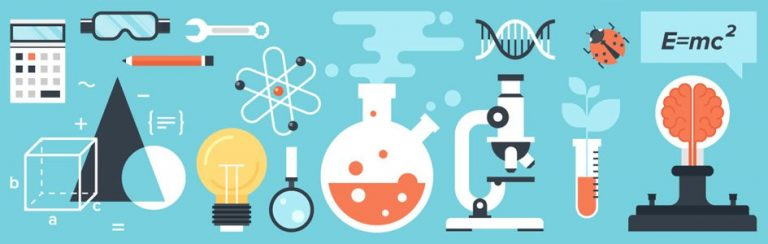
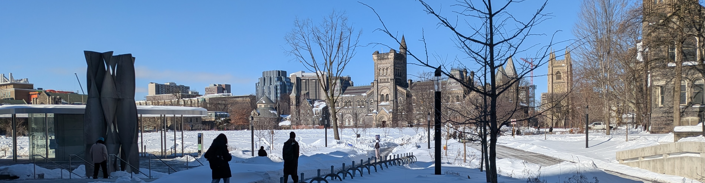
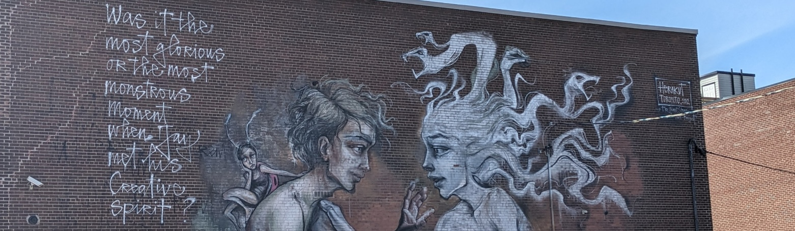
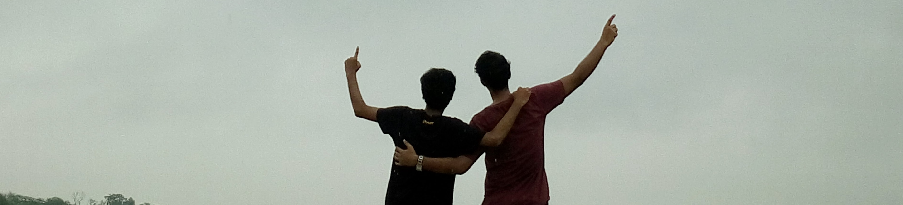

On things that Move the Mind
Writing about science, academic life, things I notice, and the occasional poem. Currently based in Toronto, but approximately around the world.

-
A Question Bank populated through my PhD
Problems and questions accumulated across five years of a PhD in granular materials, geophysical fluid dynamics, and continuum mechanics — a reference for curious minds.
-
Atmospheric Thermodynamics: Stability and the Adiabatic Parcel
What happens to an air parcel if you displace it without letting it exchange heat with its surroundings? On the three ingredients behind atmospheric stability.
-
Constitutive Laws
Back to writing after a long time, freshly settled in a new country. On the laws that describe what a material knows about itself — from Hooke's law to Einstein's field equations.
-
The Discrete Element Method
Continuum mechanics breaks down for granular materials. DEM rescues us by going back to basics: F = ma, one grain at a time, for millions of grains simultaneously.
-
Granular Segregation in Spiti
On a trip through Spiti's barren mountains, the landslides told a physics story: bigger rocks downslope, fine grains left behind. The Brazil Nut Effect in the Himalayas.

-
What Was in My Doctoral Journey?
Written after submitting the thesis. Five years of a PhD — the research trajectory, the rock bottoms, and what I actually learnt from it all.
-
FDSE 2022: Two Weeks at École Polytechnique
The Fluid Dynamics of Sustainability and the Environment summer school in Paris — lectures, experiments, barbecues, and a boat party on the Seine.
-
PhD Survival Resources for Non-Einsteins
A curated list of resources for those of us who are doing a PhD for reasons somewhat short of pure brilliance. Pre-departure notes to self.
-
Shifting Disciplines: The Millennial's Dilemma
From Aerospace Engineering to Astrophysics. On the taboos of changing fields, the application process, and why it is not as impossible as people say.
-
Internships: Building a Resume as an Undergraduate
A list of opportunities in India and abroad for undergraduates wanting to build research experience, plus notes on the cold email.

-
420 km Along Lake Erie
Harman and I took a Flix bus to Chatham at 3am, got a flat tyre at km 5, got stopped by the police at km 10, and biked to Niagara in three days.
-
On Eli Tziperman's Noble Lectures
Five days of lectures on climate surprises — warm and cold, past and future — by someone who manages to make optimism feel rigorous.
-
Yeshu Satsang, Toronto
How a cold email to a sitar player I found online led to the most homely corner of my life in Toronto.
-
An Evening at Chowdhury House
On Bhartiya Shastriya Sangeet, the Chowdhury House music conference in Kolkata, and what it means to hear Dr. N. Rajam play at 86.
-
Friends and flowers at IITK
A farewell to Hall 11 at IIT Kanpur — the campus dogs, the architecture, and the terraces with smacking views.
-
Getting to Bhutan
The trek almost didn't happen. Passports were speed-posted across four cities, a flight carried one to Cochin by mistake, and the border gates closed at 5pm.

-
New Year 26
The planet crosses a stretch / as inconsequential as the rest. On what it means to celebrate an arbitrary orbit.
-
Aattoprokash
A long poem in Bengali — on old friendships, growing up, the questions we ask only in writing, and what remains after everything changes.
-
Elephantrains
A childhood love of trains, a forest, two elephants whispering, and the thing that looks like freedom but isn't.
-
Clampearl
A clam's-eye view of the ocean, the oil beneath it, and the industry that knows where one ends but not what its own future costs.
-
A Listener Needs a Listener Too
The door is always left unlatched. The game of Wait, played from both sides.
-
Communicator
A conversation across lightyears, a shared invention, and what happens when they finally destroy the Communicator.